Nb - Terminal Tooling
Overview cli notes
nb is a swiss army knife of a note taking tool operated entirely1 in within the command line.
The nb command is your launch pad for everything note related. Without
arguments nb shows you an overview of your existing notes or a quick
cheat sheet of common actions if there are no notes.
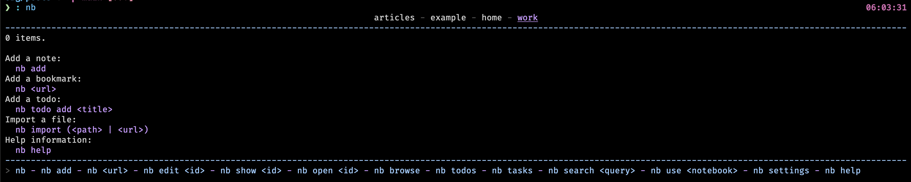
Once you've created a few notes, nb (without arguments) instead displays
all the notes in your current notebook (more on notebooks later)
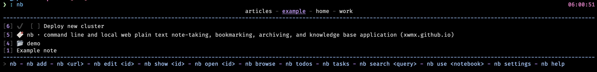
nb allows for quick jotting down of notes, tasks, bookmarks. In addition,
it provides the means of organizing your notes so you don't end up
with a jumbled mess of random thoughts.
What follows will be a whirlwind tour of the major features mention with some practical examples.
Notes
The note. The foundational concept of any note taking system. A good system allows for quickly jotting down thoughts, organizing those thoughts into some system that aids in note retrieval, and (in my opinion) is flexible enough to be adapted to the user's individual preferences in format and structure.
Creating
nb hits these marks fairly well. For creating notes, nb is spectacular.
nb add (or nb a) creates a new note. If ran interactively, it will open
up your editor of choice (configurable through nb set editor) with a
blank note, ready to capture whatever thought you have. Ran
non-interactively, nb will simply create a new note.
nb add "here is my great idea" will create a new note, and add the
content you provide (either through positional arguments, or through
standard input: echo hello world | nb add) without ever opening up
an editor. This allows for extremely quick note entry, meaning it
hardly intrudes on whatever you were doing when you had your thought.
Starting with an empty notebook, here's the results of the various forms of note entry:
nb add
Added: [1] 20231129110012.org
Viewing the current notes with nb now gives us this:
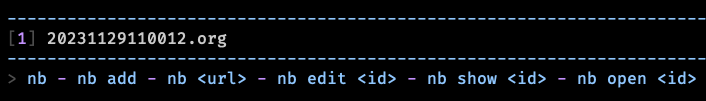
Creating a note with content from provided arguments looks like this:
nb add "A new note"
Added: [2] 20231129110836.org
And the result:
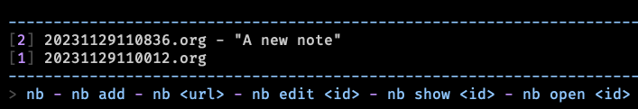
And just to show you that it's possible, I'll create a note through a pipeline:
echo hello from a pipeline | nb add
Added: [3] 20231129111327.org
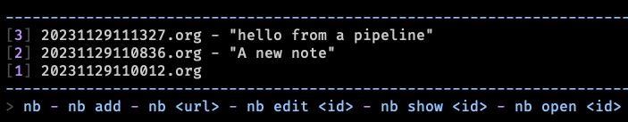
Titles
The notes created so far do not have a title, so nb has just been naming
the note files with a timestamp and displaying the first line of content
to help provide context about the note.
nb provides support for note titles, using the --title flag when creating
the note.
nb add "This is the content of the note" --title "A Note With a Title"
Added: [4] a_note_with_a_title.org "A Note With a Title"
You will notice the note now has a descriptive file name, and when viewed in the notes list, the title is displayed instead of the file name.
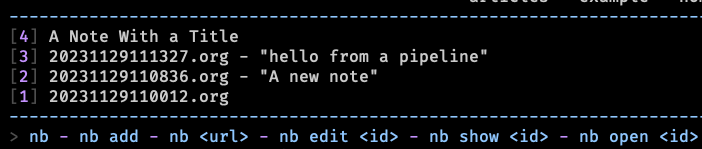
Tags
Tags can be added to notes on creation time with the --tags flag.
This will create a file with two tags in it: #notes and #example.
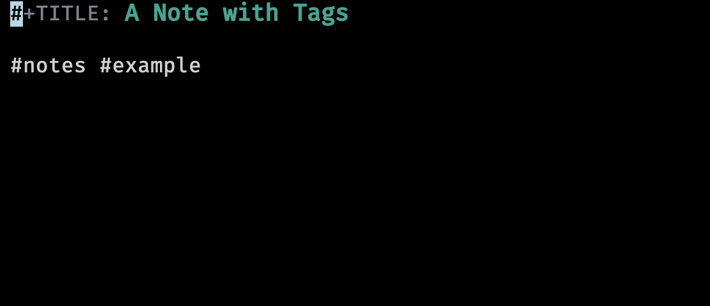
You can view all the tags you've added to notes in your notebook by just
passing the --tags flag to nb.
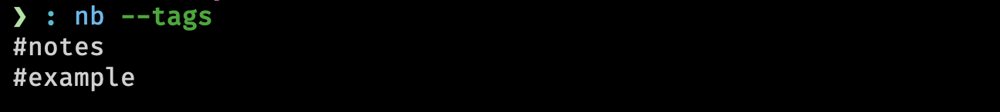
Tags are a great way of organizing your thoughts, as they provide
a way to search for notes using boolean logic (i.e. find my notes
with this tag but not that tag). You'll see more of them in the
seciton on searching.
Viewing
Creating notes is great, but viewing notes is arguable the only other mission critical feature of a note taking system.
nb has multiple ways of viewing notes, depending on your use case.
To simply see the contents of a note, you can use peek or show, and
the name or id of the note.
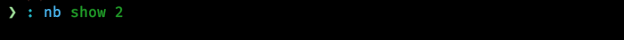
After hitting enter, a command line content viewer opens up.
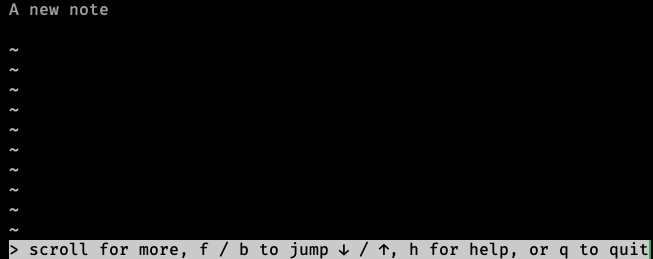
This opens up a read only view of the note (using less by default).
To have the note just printed to stdout, you can add the --print flag.
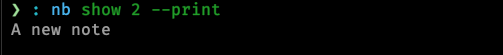
If you have the bat command, it will be used instead of cat to print the contents of your note. This can be more easily seen when viewing a note with a title:
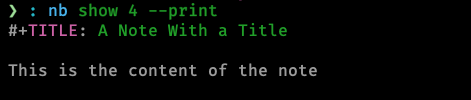
nb does this sort of progressive enhancement in many ways. It will use
the basic posix tools available on every system by default, but will
enhance its functionality when a more modern alternative is available.2
Lastly for purely viewing purposes, there exists the --excerpt flag on the
list/ls command. By default when no arguments are given to nb, it implicitly
run the list command. You can give list any selector and it will only show
items which match that selector. When the --excerpt|-e flag is given, it
will show the first few lines of the item.
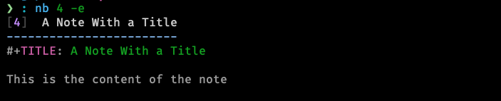
nb supports two commands for opening up the note in order to be interacted
with. edit does what you should expect, opening up the note in your editor.
open is almost identical, except when opening a bookmark, the bookmarked
url will be opened in your web browser (more on that in bookmarks).
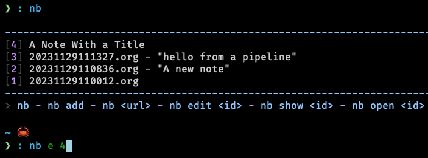
This will open up the file in the configured editor (in my case, emacsclient). Once you're done editing, simply save and close the file.
Browse
Lastly, nb supports a terminal note browser (and also a local browser server
to view and edit your notes in a web browser). It is started with nb browse
or nb b for short.
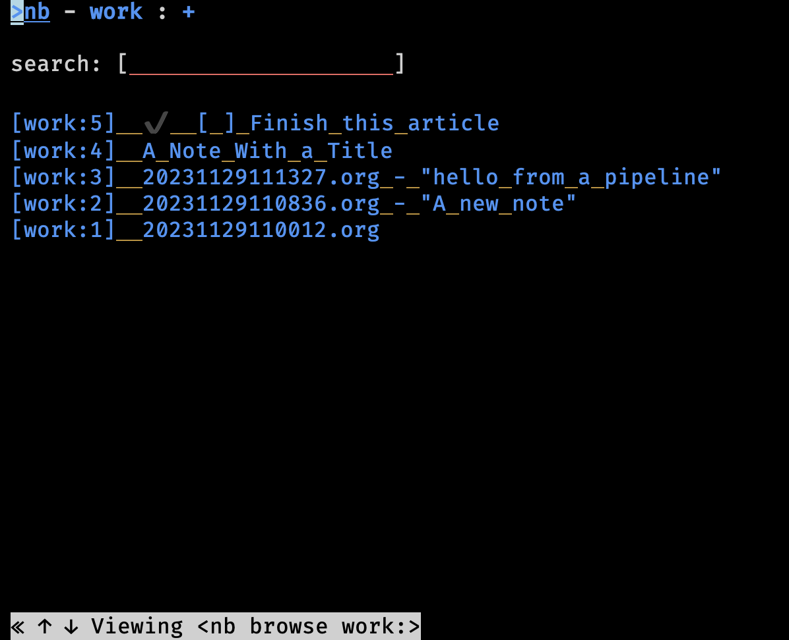
You can search from here as well as select notes to view and even edit.
If browse is ran with the --gui (or -g for short) flag, it starts a
local webserver so you can view your notes in a web browser.
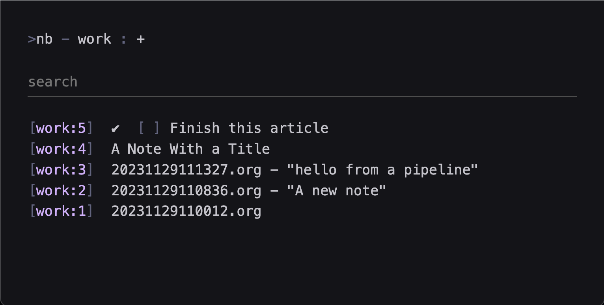
I won't go into much further detail on the browser, but if this interests you, you can check it out yourself here.
Todos
nb excels in storing and retrieving notes, but it can handle todo items as
well. For this, nb differentiates todos from tasks. A todo is a overall
body of work to be done. In nb, a todo is stored in its own file and is
visible from the list command.
To create a todo, you can use the todos sub command with the add argument.
nb todos add 'Finish this article'
Added: [5] ✔️ 20231129140921.todo.md "[ ] Finish this article"
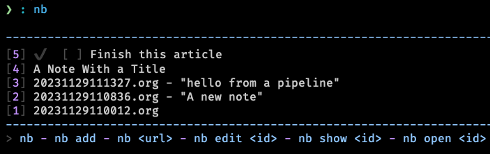
Calling nb todos without any arguments will list only the items of type
todo.
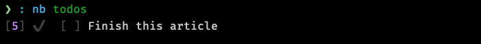
A task is a single component of a todo. A todo can have many tasks. You
can add tasks to a todo at creation time with the --task flag if you
know what they will be up front.
nb todos add 'Learn about todos and tasks' --task 'learn about todos' --task 'learn about tasks' --task 'learn how to complete todos'
Added: [6] ✔️ 20231129141554.todo.md "[ ] Learn about todos and tasks"
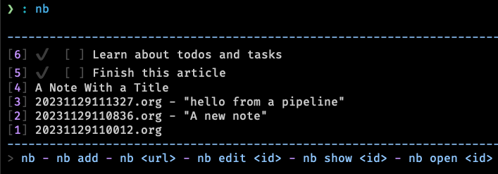
As you can see, only the top level todo is display in the list view.
Using the tasks command will show us each todo and its associated
tasks if it has any.
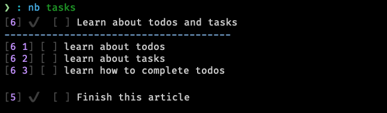
Todos can be checked off using nb todos do or nb do for an
even shorter method.
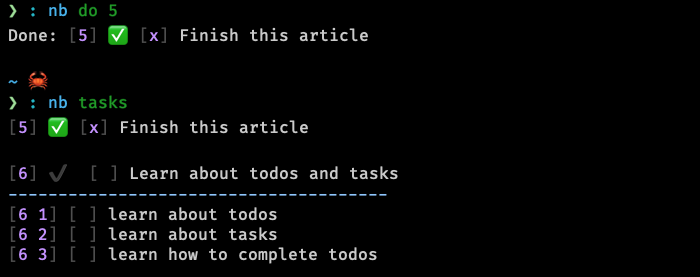
Tasks can be checked off is the same way using the selector as it's
displayed in the tasks view.
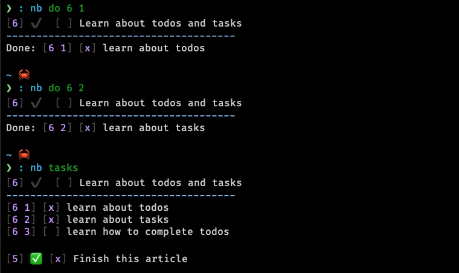
Unchecking a task is done with undo.
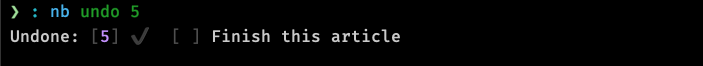
Internally, todos (and tasks) are just markdown files nb manages
for you. You can look at them directly and even edit them by hand
if you want. This can be helpful if you want to put more context
into the todo.
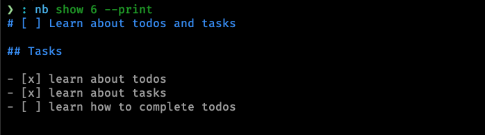
And when running nb edit 6:3
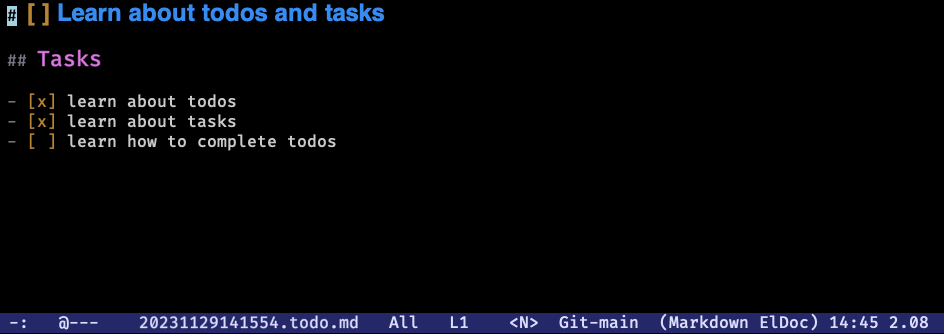
Bookmarks
Bookmarks are one more type of note-adjacent item you can store in nb.
They are created by providing nb with a url. nb will store the url and
scrape the website for its title and convert the content into markdow
to store along with the link.
This is a great way both to keep track of a url for later, but also for distraction free, offline viewing of the site at some future date.
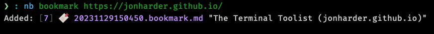
Technically thebookmark part of the above command is optional. When you give
an argument that looks like a url to nb, it is aware and creates a bookmark
for you. e.g. nb https://google.com would bookmark google.
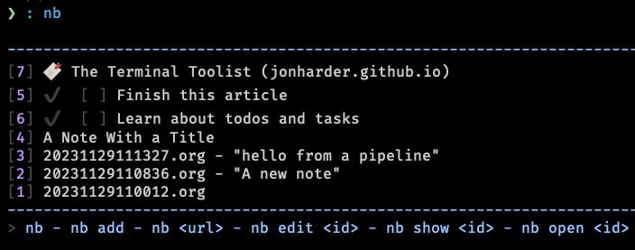
As you can see, nb parsed the title of the website, and stored the url
provided. If you tell nb to open the item (nb open 7), it will open the
stored link in your web browser. show will open the parsed contents of
the page in less, and edit allows you to, you guessed it, edit the
contents of the converted page contents. Lastly, giving no additional
arguments to the bookmarks command (bk for short) will show you only
the bookmark items you have saved.
Notebooks
Notebooks are an organizational structure to silo some notes from others. When listing notes (or todos, bookmarks, etc.), only notes from the current notebook are displayed.
The screenshots you've seen so far crop out the notebook ui from the top center of its output.
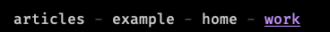
Notebooks can be created with the notebook subcommand. nb notebook add sample
would create a new notebook called sample. nb notebook delete sample would
delete it.
The highlighted work indicates it is the current notebook, meaning
all commands will function only on the items within this notebook.
You can switch to a different notebook using the use command, but
if you just want to run a one off search, view, or edit command,
you can prefix the selector with the notebook name and a :.
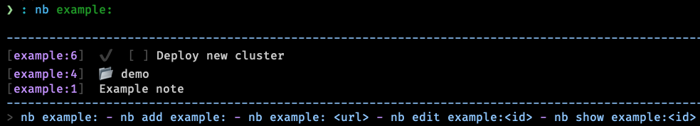
In my understanding, notebooks make sense if you keep multiple logically unrelated corpora of notes.
Folders
nb also supports folders which act exactly as you would expect
a folder to. Folders can be used to organize or hierarchically
order your notes. In nb, they help to reduce clutter of your
notes because any note inside a folder is not displayed by
default.
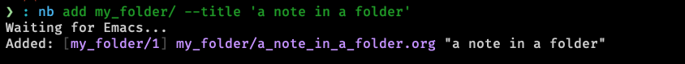
Folders (unlike notebooks) will be created on the fly as needed
given the path of the note you want to create. In this case,
the folder my_folder was created dynamically in order to create
the note.
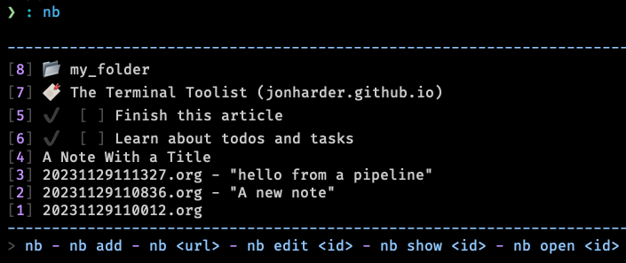
You can view the contents of a folder by issuing the folder name
and a /.
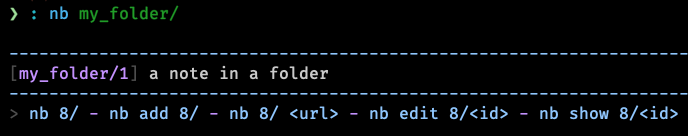
Pretty much every command can be prefixed with a selector, meaning you can put your bookmark in a different notebook, a todo inside a folder, a note inside a different notebook's nested folder, etc.
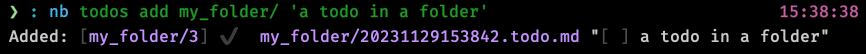
Search
nb has intuitive and powerful search functionality, allowing you to search
for strings, regexes, tags (covered briefly in this article, but you should
check them out in full), types of notes, and combine all of the above with
Boolean operators: --and and --or. The sub-command to search is search or q
for short.
Searches are performed in the current notebook by default, but like any other nb command, can target any notebook and/or folder if desired.
Searches can be made across all of your notes using the -a flag.
I won't go much deeper into nb's search functionality, so you can check it
out yourself if you're interested. It's very easy to figure out and follows
intuitive conventions if you've used any searching tool before.
To get a feel for how searches work, here are a few examples taken from the docs:
# search current notebook for "example query" nb search "example query" # search the notebook "example" for "example query" nb search example: "example query" # search all unarchived notebooks for "example query" and list matching items nb search "example query" --all --list # search for "example" AND "demo" nb search "example" "demo" # search for "example" AND "demo" nb search "example" --and "demo" # search with regular expression nb search "\d\d\d-\d\d\d\d" # search for items tagged with "#tag1" nb search --tags tag1 # search for items tagged with "#tag1" (short version) nb q -t tag1 # search for items tagged with "#tag1" (even shorter version) nb q "#tag1" # search in the "example" notebook for "example" nb example:q "example"
Conclusion
nb is busting at the seams with functionality. This article has covered maybe
a quarter of all the things it can do. Their documentation is fantastic and
covers everything I didn't have time to. Additionally the built in help is also
comprehensive (nb help, or just throw a --help onto any command you're trying
to work with). It also supports linking notes to each other (see docs), syncing
notes automatically using a git repository, color themes, a robust plugin system,
images, videos (nb import, docs), and more.
Despite the overwhelming breadth of features, I've found working with nb very
pleasant to explore incrementally. Commands are well documented, arguments are
flexible, meaning you don't have to memorize the exact order or name of every
command; even if you're close, nb will likely understand what you were trying
to do, and will do it for you.
I especially that you can specify your preferred file format; nb doesn't
force you to use whichever format they decided is best; you get to choose.4
I also greatly appreciate that all your notes are stored on your filesystem,
in a simple folder structure stored in ~/.nb.
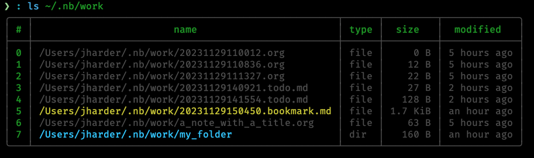
In a world of cloud only, proprietary solutions, I find myself looking for simple solutions using existing and well known technologies with a preference for offline first. I want to be able to zip my notes and copy them to another computer, or better yet, utilize Dropbox or git to track and transfer changes.nb manages syncing behind the scenes for you using git if you provide a remote
repository for it to sync with. This is the simplest solution to sync I have
seen. If you're interested in more of the details of nb's sync functionality,
see their docs on the concept.
Even refreshing note taking tools like obsidian which store your notes in plain markdown on your machine require a paid subscription for access to their sync functionality, while other tools silently migrate useful features from their free plans into their paid ones.
nb strikes a balance between the do-it-yourself freedom of note organization and
the power that comes from enforcing a known format (todos, bookmarks, notebooks,
etc.). The only "missing" feature I noticed was a lack of mobile support, but that
hardly feels fair to fault a terminal note taking tool for missing. If that's a
deal breaker, perhaps nb won't be the perfect tool for you.
It was easy enough to get started with nb and because the files are any
format you like, stored on your computer, you risk nothing if you don't end up
liking it, so I'd recommend just giving it a shot.